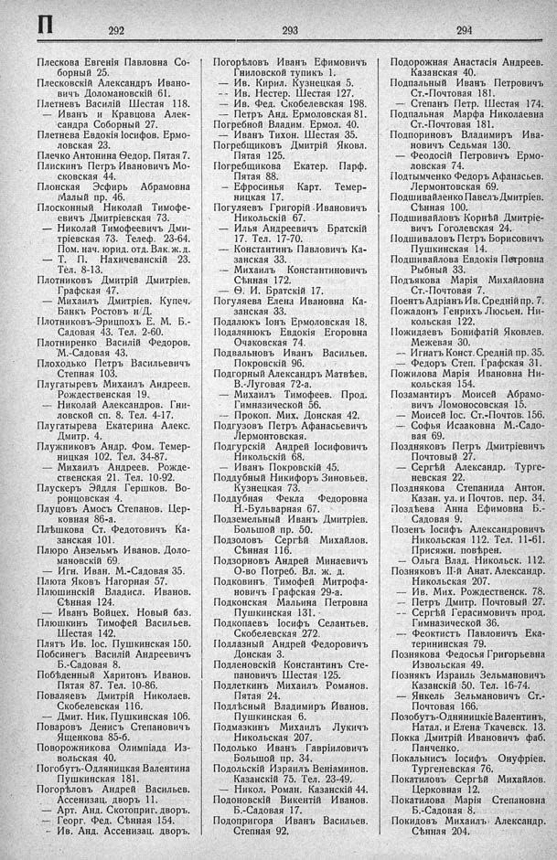

Лист источника 448
Скан

Распознанный текст
П
292
Плескова Евгенія Павловна Со-
борный 25.
Плесковскій Александръ Ивано-
вичъ Доломановскій 61.
Плетневъ Василій Шестая 118.
— Иванъ и Кравцова Алек-
сандра Соборный 27.
Плетнева Евдокія Іосифов. Ермо-
ловская 23.
Плечко Антонина Ѳедор. Пятая 7.
Плискинъ Петръ Ивановичъ Мо-
сковская 44.
Плонская Эсфирь Абрамовна
Малый пр. 46.
Плосконный Николай Тимофе-
евичъ Дмитріевская 73.
— Николай Тимофеевичъ Дми-
тріевская 73. Телеф. 23-64.
Пом. нач. юрид. отд. Влк. ж. д.
— Т. П. Нахичеванскій 23.
Тел. 8-13.
Плотниковъ Дмитрій Дмитріев.
Графская 47.
— Михаилъ Дмитріев. Купеч.
Банкъ Ростовъ н/Д.
Плотниковъ-Эрицпохъ Е. М. Б.-
Садовая 43. Тел. 2-60.
Плотниренко Василій Федоров.
М.-Садовая 43.
Плоходько Петръ Васильевичъ
Степная 103.
Плугатыревъ Михаилъ Андреев.
Рождественская 19.
— Николай Александров. Гни-
ловской сп. 8. Тел. 4-17.
Плугатырева Екатерина Алекс.
Дмитр. 4.
Плужниковъ Андр. Фом. Темер-
ницкая 102. Тел. 34-87.
— Михаилъ Андреев. Рожде-
ственская 21. Тел. 10-92.
Плускеръ Эйдля Гершков. Во-
ронцовская 4.
Плуцовъ Амосъ Степанов. Цер-
ковная 86-а.
Плѣшкова Ст. Федотовичъ Ка-
занская 101.
Плюро Анзельмъ Иванов. Доло-
мановскій 69.
— Игн. Иван. М.-Садовая 35.
Плюта Яковъ Нагорная 57.
Плюшинскій Владисл. Иванов.
Сѣнная 124.
— Иванъ Войцех. Новый баз.
Плюшкинъ Тимофей Васильев.
Шестая 142.
Плятъ Ив. Іос. Пушкинская 150.
Побсинегъ Василій Андреевичъ
Б.-Садовая 8.
Побѣденный Харитонъ Иванов.
Пятая 87. Тел. 10-86.
Поваляевъ Дмитрій Николаев.
Скобелевская 116.
— Дмит. Ник. Пушкинская 106.
Поваровъ Денисъ Степановичъ
Ященкова 85-б.
Поворожникова Олимпіада Из-
вольская 40.
Погобутъ-Одляницкая Валентина
Пушкинская 181.
Погорѣловъ Андрей Васильев.
Ассенизац. дворъ 11.
— Арт. Анд. Скотоприг. дворъ.
— Георг. Фед. Сѣнная 154.
— Ив. Анд. Ассенизац. дворъ.
293
Погорѣловъ Иванъ Ефимовичъ
Гниловской тупикъ 1.
— Ив. Кирил. Кузнецкая 5.
-- Ив. Нестер. Шестая 127.
— Ив. Фед. Скобелевская 198.
— Петръ Анд. Ермоловская 81.
Погребной Владим. Ермол. 40.
— Иванъ Тихон. Шестая 35.
Погребщиковъ Дмитрій Яковл.
Пятая 125.
Погребщикова Екатер. Парф.
Пятая 88.
— Ефросинья Карт. Темер-
ницкая 17.
Погуляевъ Григорій Ивановичъ
Никольскій 67.
— Илья Андреевичъ Братскій
17. Тел. 17-70.
— Константинъ Павловичъ Ка-
занская 33.
— Михаилъ Константиновичъ
Сѣнная 172.
— Ѳ. И. Братскій 17.
Погуляева Елена Ивановна Ка-
занская 33.
Подалюкъ Іонъ Ермоловская 18.
Подалянюкъ Евдокія Егоровна
Очаковская 74.
Подвальновъ Иванъ Васильев.
Покровскій 96.
Подгорный Александръ Матвѣев.
В.-Луговая 72-а.
— Михаилъ Тимофеев. Прод.
Гимназической 56.
— Прокоп. Мих. Донская 42.
Подгузовъ Петръ Афанасьевичъ
Лермонтовская.
Подгурскій Андрей Іосифовичъ
Никольскій 68.
— Иванъ Покровскій 45.
Поддубный Никифоръ Зиновьев.
Кузнецкая 73.
Поддубная Фекла Федоровна
Н.-Бульварная 67.
Подземельный Иванъ Дмитріев.
Большой пр. 50.
Подзоловъ Сергѣй Михайлов.
Сѣнная 116.
Подзорновъ Андрей Минаевичъ
О-во Потреб. Вл. ж. д.
Подковинъ Тимофей Митрофа-
новичъ Графская 29-а.
Подконская Мальина Петровна
Пушкинская 131.
Подкопаевъ Іосифъ Селантьев.
Скобелевская 272.
Подлазный Андрей Федоровичъ
Донская 3.
Подленовскій Константинъ Сте-
пановичъ Шестая 125.
Подлеткинъ Михаилъ Романов.
Пятая 24.
Подлѣсный Владимиръ Иванов.
Пушкинская 6.
Подмазкинъ Михаилъ Лукичъ
Никольская 207.
Подолько Иванъ Гавріиловичъ
Большой пр. 34.
Подольскій Израиль Веніаминов.
Казанскій 75. Тел. 23-49.
— Никол. Роман. Казанскій 44.
Подоновскій Викентій Иванов.
Б.-Садовая 17.
Подопригора Иванъ Васильев.
Степная 92.
294
Подорожная Анастасія Андреев.
Казанская 40.
Подпальный Иванъ Петровичъ
Ст.-Почтовая 181.
— Степанъ Петр. Шестая 174.
Подпальная Марфа Николаевна
Ст.-Почтовая 181.
Подпориновъ Владимиръ Ива-
новичъ Седьмая 130.
— Феодосій Петровичъ Ермо-
ловская 74.
Подтымченко Федоръ Афанасьев.
Лермонтовская 69.
Подшивайленко Павелъ Дмитріев.
Сѣнная 100.
Подшивайловъ Корнѣй Дмитріе-
вичъ Гоголевская 24.
Подшиваловъ Петръ Борисовичъ
Пушкинская 14.
Подшивайлова Евдокія Петровна
Рыбный 33.
Подъякова Марія Михайловна
Ст.-Почтовая 7.
Поентъ Адріанъ Ив. Средній пр. 7.
Пожадонъ Генрихъ Люсьен. Ни-
кольская 122.
Пожидаевъ Бонифатій Яковлев.
Межевая 30.
-- Игнатъ Конст. Средній пр. 35.
— Федоръ Степ. Графская 31.
Пожилова Марія Ивановна Ни-
кольская 154.
Позамантиръ Моисей Абрамо-
вичъ Ломоносовская 15.
— Моисей Іос. Ст.-Почтов. 156.
— Софья Исааковна М.-Садо-
вая 69.
Поздняковъ Петръ Дмитріевичъ
Почтовый 27.
— Сергѣй Александр. Турге-
невская 22.
Позднякова Степанида Антон.
Казан. ул. и Почтов. пер. 34.
Поздѣева Анна Ефимовна Б.-
Садовая 9.
Позенъ Іосифъ Александровичъ
Никольская 112. Тел. 11-61.
Присяжн. повѣрен.
— Ольга Влад. Никольск. 112.
Позняковъ ІІ-й Анат. Александр.
Никольская 207.
— Ив. Мих. Рождественск. 78.
— Петръ Дмитр. Почтовый 27.
-- Сергѣй Герасимовичъ прод.
Гимназической 36.
— Феоктистъ Павловичъ Ека-
терининская 79.
Познякова Федосья Григорьевна
Извольская 49.
Познякъ Израиль Зельмановичъ
Казанскій 50. Тел. 16-74.
— Янкель Зельмановичъ Ст.-
Почтовая 166.
Позобутъ-Одняницкіе Валентинъ,
Натал. и Елена Ткачевск. 13.
Покка Дмитрій Ивановичъ фаб.
Панченко.
Покальнисъ Іосифъ Онуфріев.
Тургеневская 76.
Покатиловъ Сергѣй Михайлов.
Церковная 12.
Покатилова Марія Степановна
Б.-Садовая 8.
Покидовъ Михаилъ Александр.
Сѣнная 204.